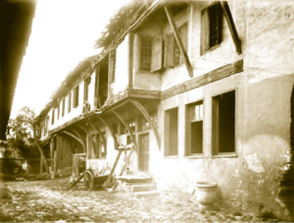
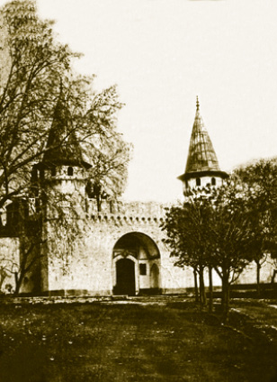
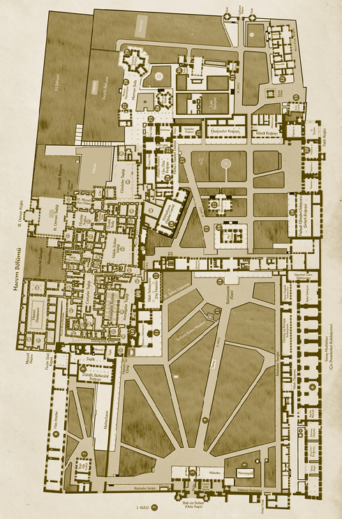

BİTİRİRKEN
Herkes Doğu Berlin’de suni kanalla çevrili Bergama ve Önasya müzelerinin bulunduğu adayı bu adla, yani Museumsinsel olarak bilir. Oysa iki tarafı suyla çevrili, üçüncü tarafında da muhteşem Ayasofya ve Sultanahmet Camii gibi anıtların sınırladığı bizim Topkapı Sarayı Müzesi diye bildiğimiz; mazide Sur-ı Hümâyûn denen padişah sarayını ve bahçelerini çeviren surların içindeki geniş alan kadar bu ada layık olanı yoktur. Yani, batıda Sirkeci Garı’ndan başlayıp bugünkü Gülhâne Parkı’nın girişine, güneyde parkın köşesindeki sur üstünde yer alan Alay Köşkü’nden başlayıp Marmara’da Ahırkapı’ya ve doğuda oradan bütün Sarayburnu’nu dolaşıp Eminönü’ne kadar gelen uzun surlardan söz ediyoruz.
Bu geniş alanın 19. yüzyılda başlayan hazin bir macerası vardır. Bütün saraylar da tıpkı insanlar ve cemiyetler gibi işlevlerini başka kurumlara devrederler. Klasik devir Osmanlı Sarayı, bizim Topkapı Sarayı dediğimiz Saray-ı Amire de 19. yüzyılın modern dünyasında devletler sistemi içerisindeki bir büyük devletin klasik evi olarak işlevini tamamlamış ve görevini yeni saraylara devretmek zorunda kalmıştır. İlk olarak Topkapı’nın bu görevini Dolmabahçe Sarayı üstlenmiştir.
Saray 1830’larda II. Mahmud tarafından hemen hemen terk edilip yıldan yıla ramazan ortasında Hırka-i Saadet ziyareti için gelinen ve bir de son yolculuğuna çıkarken padişah naaşının tekfin için getirildiği bir baba ocağı hâline dönüşünce çökmeye başlamıştır.
Her ne kadar son padişaha bile Bâbü’s saade önüne konulan altın tahtta biat edilse de, bu ananenin dahi V. Murad ve V. Mehmed Reşad gibi iki istisnası vardır. Bu yüzyılın içinde bu sarayın güzelliğini, Marmara’yı seyir için Mecidiye Kasrı’nı yaptıran Sultan Abdülmecid’den başka bir hükümdarın tatmadığı açıktır.
İhmal Edilen Saray
Osmanlı padişahlarının baba ocağı 19. yüzyılı ve 20. yüzyıl başını doğrusu terk edilerek geçirmiştir. Sadece bugünkü Hazine Dairesi burada muhafaza edilmeye devam edilmiştir. Saray-ı Amire’nin muhteşem bahçeleri ne yazık ki 19. yüzyılda çok ihmal edilmiş, kıyıya yakın köşkler yıkıma terk edilmiştir.
20. yüzyılda saray müzeye çevrilince restore edilip düzenlendi. 1940’larda bazı yanlış restorasyonlar da yapıldı. Daha hoş ve saygılı bir asır olduğu söylenemez. Saltanat devrinde dahi buraya yapılan binalar, özellikle Maarif Matbaası ve Cumhuriyet Dönemi’nde kurulan yanı başındaki Matbaacılık Lisesi gibi binalar mimariyi bozan ve bizce hem kat yüksekliğinin düşürülmesi hem de dış görünüşlerinin mutlaka düzeltilmesi gereken yapılardır.
Bütün 19. yüzyıl boyunca saray arazisi içine inşa edilen tek yüz akı bina, II. Abdülhamid devrinde Osman Hamdi Bey’in gayretleriyle mimar Vallori’nin tersim ve inşa ettiği Arkeoloji Müzesi’dir. Maalesef, son 50 senede dahi Topkapı ihmal edilen, yeterince tamir görmeyen, daha fenası kamu ve özel kurumlarca yağmalanan bir saha olmuştur. Umarız, 21. yüzyılda bu hataların hepsi düzeltilir.
Asıl Yıkım Zamanı
Topkapı bahçelerinin 19. yüzyılda yaşadığı asıl facia, Rumeli Demiryolu Hattı’nın inşası ve işletilmesi imtiyazını alan Baron Hirsch’in demiryolunun başlangıç noktası olarak Sirkeci’yi seçmiş olmasıdır. Tabii o zaman liman faaliyetlerinin tamamen Haliç ağzında yoğunlaştığını göz önünde tutmalıyız. Bugün bu merkez Haydarpaşa’ya ve Galata kıyılarına dağılmıştır. Sirkeci Garı’ndan Avrupa’ya uzanan demiryolunun, sarayın içinden geçirilmesi gündeme geldiğinde, bazı devlet erkânı Sultan Abdülaziz’e; “Hat ecdad sarayının içinden geçiyor, bu olur mu?” dediklerinde Sultan Abdülaziz’in “Şimendifer hattı yapılsın da, isterse sırtımdan geçsin.” dediği malumdur.
Gerçekten de hat inşa edilip işletildiğinde kıyıdaki Sepetçiler Kasrı’nın kaldığı, fakat etrafla ilişkisi kesildiği için yıkıma terk edildiği, nice ahşap ve kâgir köşkün yıkıldığı veya yıkıma bırakıldığı görüldü. 19. yüzyıl boyunca yeni sarayların terkin edilen, gözden çıkarılan birçok eşyası da buraya getirilmiş ve saray depolarında tarih ve müzecilik açısından ilgisiz terk edilmiş malzeme birikmiştir.
Gelişmeleri İzlemek Lazım
Osmanlı’nın fabrikalara, muasır medeniyetin ulaşım araçlarına tutkusu malum; Patrona Halil gibileri ta 18. yüzyıldan beri Haliç kıyısında ve Kâğıthane civarında yer alan muhteşem sahil saraylarının ancak küçük bir kısmını yıktırmıştır. Asıl yıkım buralara askerî fabrikalar, dökümhaneler yaptıran Sultan Mahmud asrındadır. Osmanlı’nın sanayi açlığı 20. yüzyılın devlet adamlarına da geçti. Gemlik veya İznik Körfezi’nde üç-dört fabrika için körfezin kirlenmesine göz yumuldu.

Matbah-ı amire’de aşçı koğuşlarının bir asır evvelki vaziyetleri
Bugün Sirkeci’den uzanan demiryollarının Yenikapı’ya kadar olan bölümünün sökülmesi söz konusu; isabetli ve göze hoş görünen bir karar. Peki, kaldırılan demiryolunun etrafındaki bazı eski binalar ne olacak? Sirkeci Garı müze yapılır da, çirkin binalar ve ilaveler yıkılacak mı? Yeniden mi tersimi yapılacak? Mülkiyeti kime ait olacak? Sözde ulvi, fakat geleceği şüpheli projelerle değerli arazi ve binaları yağmalamak için ortaya çıkanların haddi hesabı olmaz. Demiryolunun kaldırılması galiba iki yıl içinde düşünülüyor.
Yurttaşların ve hemşehrilerin uyanık olup gelişmeleri takip etmeleri lazım. Sur-ı Hümâyûn belirttiğimiz üzere Sirkeci Garı’ndan başlar. İstanbul Şehremini Topuzlu Cemil Paşa’nın 20. yüzyıl başında halka açtığı Gülhâne Parkı düzenlemesi olmasa, saray arazisinin bu kısmına da kim bilir ne işler edilirdi. Zaten 1940’tan beri Gülhâne Parkı’na monte edilen bazı binaları yeniden gözden geçirmek gerekir.
Marmara tarafındaki Ahırkapı ve Gülhâne hastaneleri, Maarif Matbaası ve Matbaa Lisesi gibi binalar şüphesiz gereklidir, ama mutlaka buraya kurulmaları gerekiyor muydu? Bunlar saraya iade edildi, ama restorasyonu gerekli. Sarayın elinden alınan binalar da var, Darbhâne gibi. Şu anda kullanımı, hiçbir şey yapılmadığı hâlde bir vakfa ait... O yetmedi, Alay Köşkü’ne göz diken kuruluşlar da var.
Topkapı Sarayı 19. yüzyıla kadar devletin eviydi. Cumhuriyet Dönemi’nde de harap olan sarayın yeniden restorasyonu, korunması söz konusudur. Bugün Topkapı Sarayı maalesef turizmin tahaccümü altında bunalmaktadır. Şurası çok açıktır; Osmanlı Sarayı’ndaki bazı eserlerin bir an evvel kurulacak millî bir müzeye nakledilmesi gerekiyor. Ayrıca Topkapı Sarayı artık Osmanlı hükümdarlarının 19. yüzyıla kadar oturdukları, ondan sonra bir ritüel, uhrevî merkez olarak muhafaza ettikleri bir yer olarak korunmak zorundadır. O nedenledir ki onun içindeki ritüele riayet edilmiştir. Meselâ Hırka-i Saadet’te 24 saat Kur’an okuma âdeti Cumhuriyet Dönemi’nde de devam edilen bir âdettir. Bugün de buna riayet ediliyor.
Topkapı Sarayı’nın Geleceği
Topkapı Sarayı bir müze olarak zorlanıyor. Çünkü aslında saraydır. Sayısız malzemenin teşhiri ve depolanması için yeni yerlere ihtiyaç var. Milli varlığını ve eski eserlerinin kapasitesini tanımayan birtakım gruplar ve kamu kuruluşları hâlâ saray arazisinden yer almak peşinden koşuyorlar.
Durum ciddi... Lütfen, Sur-ı Hümâyûn dediğimiz saray arazisinin içindeki binalar Topkapı Sarayı’na ve Arkeoloji Müzesi’ne bırakılsın. İkisi de yer sıkıntısı çekiyor.
Uygar bir ülke böyle bir müze adasının serencamını her gün izler. Bizde ise müze gezmeyen halkın ilgisizliğinden istifade eden ve kendileri de bilgisiz olan birtakım gruplar saraya yardım etmek şöyle dursun, vermeden almaya çalışıyorlar. Bizim müze adası eşi pek bulunmayan; hem parkta gezinti imkânı veren, hem de müze gezisi yapılacak bir zenginliktir. Ama burayı restore etmeden önce kendi şuurumuzu restore etmemiz gerekiyor.
Hele Osmanlı Sarayı üzerindeki tetkikleri, muasırı Rusya sarayları ile karşılaştırmak mümkün olmadığı gibi; geçmiş asırlardaki Bizans Sarayı’na dair monografi ve bilgilerle dahi karşılaştırmak mümkün değildir. Sarayın ilim âleminin yoğun ilgisi ile incelenmesi gerekiyor.

Bâbü’s selam
